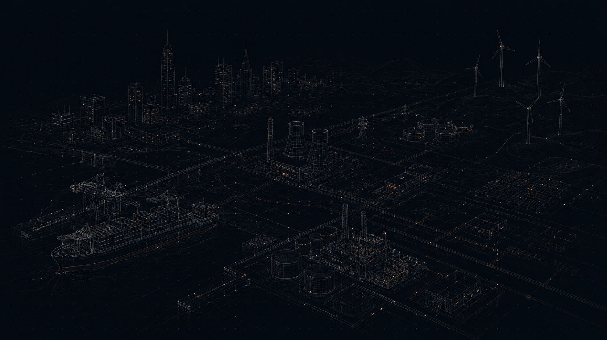
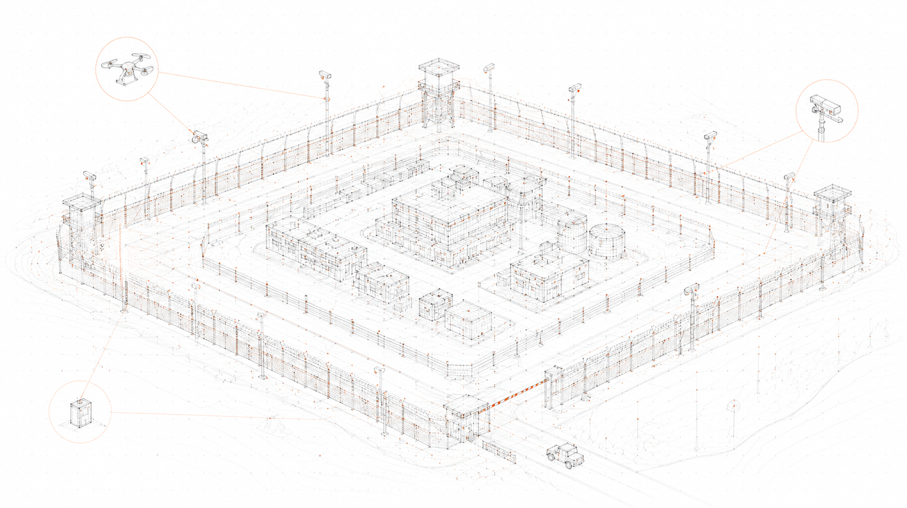
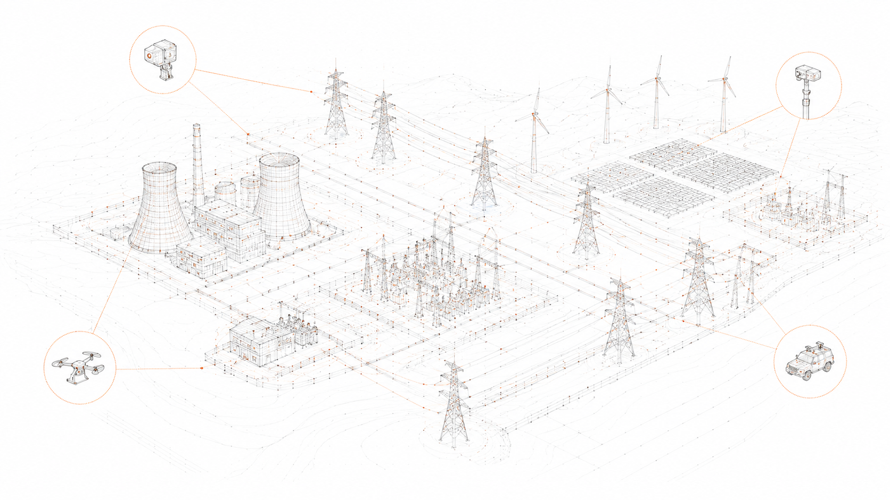
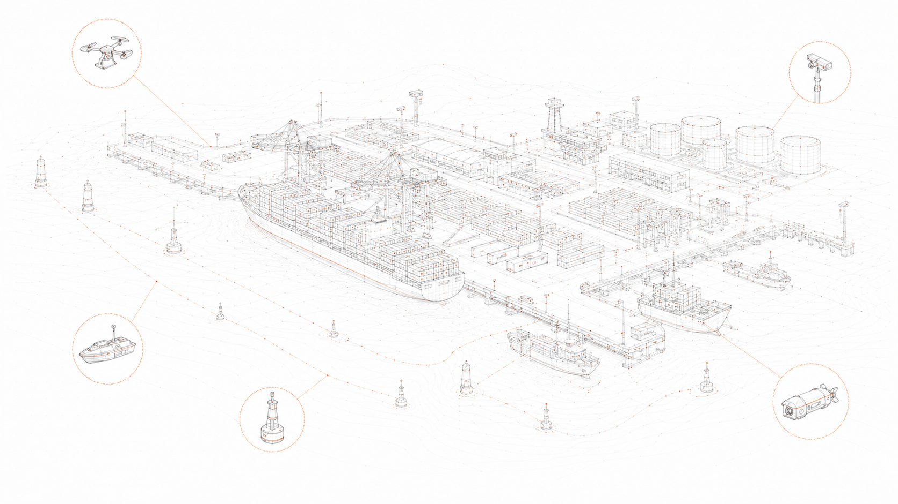
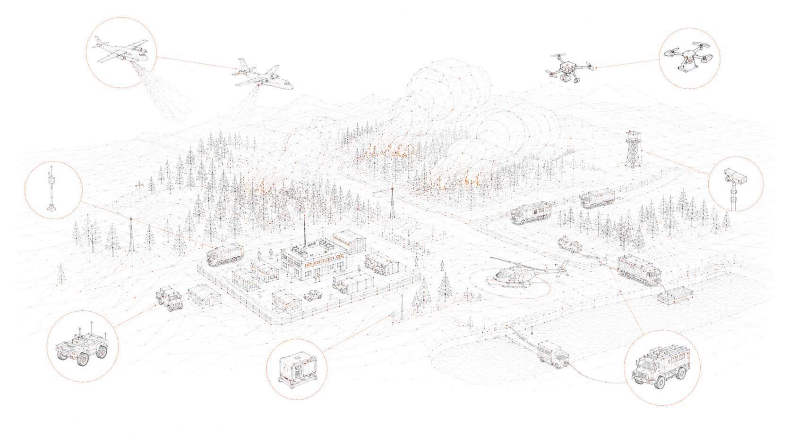
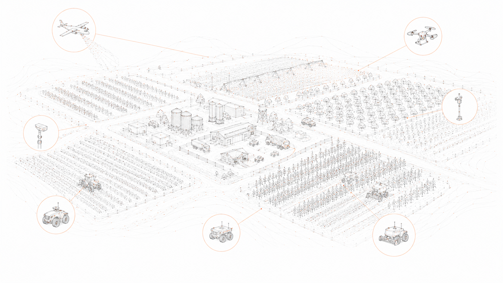
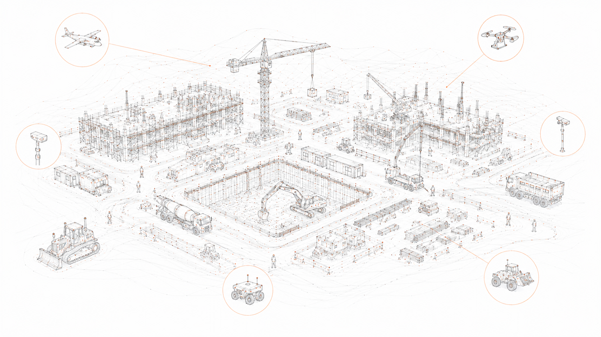

{{ t.hero.subtitle }}
{{ t.doctrine.p1 }}
{{ t.doctrine.p2 }}
{{ t.doctrine.pullquote }}
{{ c.body }}






{{ t.cases.more }}
{{ t.engine.p1 }}
{{ t.engine.p2 }}
{{ t.engine.domainsCaption }}
{{ t.cta.body }}